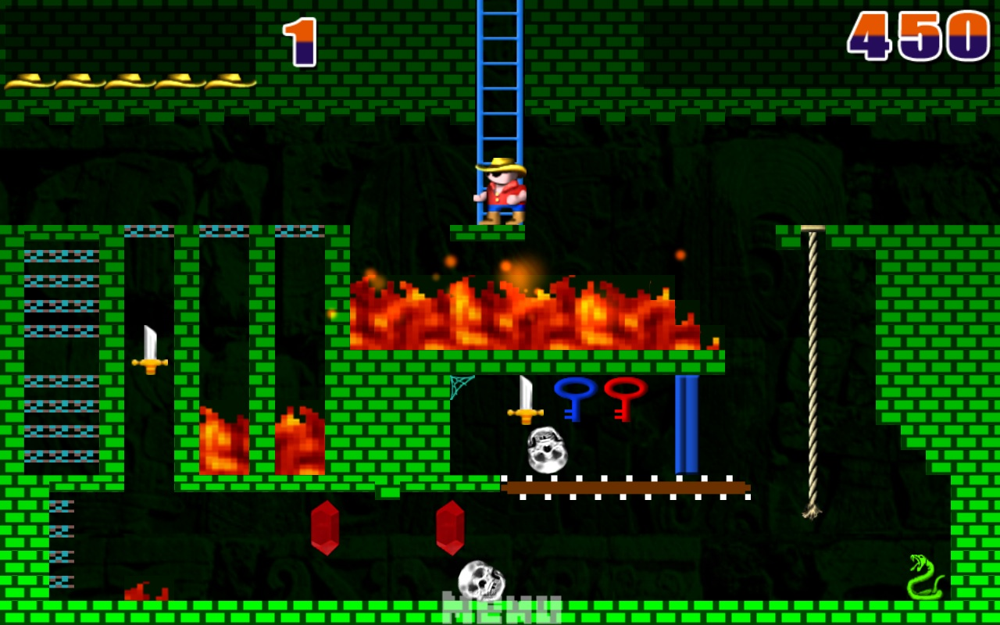

During the height of Robert Jaeger's career, computers were not powerful enough to process intense graphics.
Despite this, his games makes up for this through carefully designed and architected code that could take computers to their limit.
His game
Montezuma's Revenge, for example, consists of countless different mechanics all of which fit together in a way that makes Robert's style incomparable to the current state of game design
Shown below is a modern port of Montezuma's Revenge for iOS and Android
